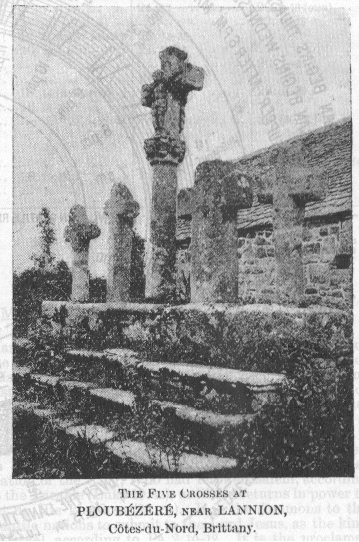

|
CRUCIFIED WITH THE LORD (Matt. 27:38 and Luke 23:32). Mislead by tradition and the ignorance of Scripture on the part of medieval painters, it is the general belief that only two were crucified with the Lord. But Scripture does not say so. It states that there were two "thieves" (Gr. lestai = robbers, Matt. 27:38. Mark 15:27); and that there were two "malefactors" (Gr. kakouryoi, Luke 23:32). It is also recorded that both the robbers reviled Him (Matt. 27:44. Mark 15:32); while in Luke 23:39 only one of the malefactors "railed on Him", and "the other rebuked him" for so doing (v. 40). If there were only two, this is a real discrepancy; and there is another, for the two malefactors were "led with Him to be put to death" (Luke 23:32), and when they were come to Calvary, "they" then and there "crucified Him and the malefactors, one on the right hand and the other on the left" (v. 33). But the other discrepancy is according to Matthew, that after the parting of the garments, and after "sitting down they watched Him there", that "THEN" were there two robbers crucified with Him, one on the right hand and the other on the left" (Matt. 27:38. Mark 15:27). The two malefactors had already been "led with Him" and were therefore crucified "with Him", and before the two robbers were brought. The first two (malefactors) who were "led with Him" were placed one on either side. When the other two (robbers) were brought, much later, they were also similarly placed; so that there were two (one of each) on either side, and the Lord in the midst. The malefactors were therefore the nearer, and being on the inside they could speak to each other better, and the one with the Lord, as recorded (Luke 23:39-43). John's record confirms this, for he speaks only of place, and
not of time. He speaks, generally of the
But John further states (19:32, 33) : "then came the soldiers and brake the legs of the first, and of the other which was crucified with Him. But when they came (Gr. = having come) to Jesus, and saw that He was dead already, they brake not His legs." Had there been only two (one on either side) the soldiers would not have come to the Lord, but would have passed Him, and then turned back again. But they came to Him after they had broken the legs of the first two.  There are two words used of the "other" and "others" in John 19:32 and Luke 23:32 (See Ap. 124. 1). In the former passage we read, "they brake the legs of the first and of the other." Here the Greek is allos which is the other (the second) of the two when there are more (see Matt. 10:23; 25:16, 17, 20; 27:61; 28:1. John 18:15, 16; 20:2, 4, 8. and Rev. 17:10). In the latter passage (Luke 23:32) the word is heteros = different (See Ap. 124. 2) : "and others also, two were being led with Him." These were different (*1) from Him with Whom they were led, not different from one another; for they were "in the same condemnation", and "justly", while He had "done nothing amiss" (vv. 40, 41). From this evidence, therefore, it is clear that there were four "others" crucified with the Lord; and thus, on the one hand, there are no "discrepancies", as alleged; while, on the other hand, every word and every expression, in the Greek, gets (and gives) its own exact va 473 lue, and its full significance. To show that we are not without evidence, even from tradition, we may state that there is a "Calvary" to be seen at Ploubezere near Lannion, in the Cotes-du-Nord, Brittany, known as Les Cinq Croix ("The Five Crosses"). There is a high cross in the center, with four lower ones, two on either side. There may be other instances of which we have not heard. "In the Roman Catholic church ... the altar slab or "table" alone is consecrated, and in sign of this are cut in its upper surface five Greek crosses, one in the center and one in each corner ... but the history of the origin and development of this practice is not fully worked out" (Encycl. Brit., 11th (Cambridge) ed., vol. i, pp. 762, 763). This practice may possibly be explained by the subject of this Appendix. (*1) Cp. Matt. 6:21, 24; 8:21; 11:3. Luke 5:7;
6:6; 7:41; 9:56; 14:31; 16:13, 18; 17:34,
35; 18:10; 28:40.
|